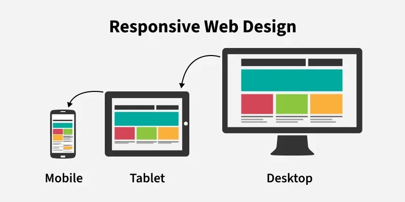

A UI developer builds and maintains the visual and interactive parts of websites and web applications. Their responsibilities include converting UI/UX designs into functional interfaces, creating forms and interactive elements, updating website content, implementing responsive layouts, testing interfaces, and fixing UI issues using HTML, CSS, JavaScript, and frontend frameworks.
What Does a UI Developer Do? Roles, Responsibilities and Skills?
A UI (User Interface) Developer builds the visual and interactive parts of websites and web applications. UI developers convert designs created by UI/UX designers into functional, responsive user interfaces using technologies such as HTML, CSS, JavaScript, and frontend frameworks like Vue.js and React.
The main goal of a UI developer is to ensure that
a website or application looks consistent, works
smoothly, and provides a good user experience
across different devices and screen sizes.
Here is the tasks UI Developers do
1. Convert UI/UX Designs into Web Interfaces
UI/UX designers create visual designs and prototypes that define how a website or application should look and behave. UI developers transform these designs into working interfaces using frontend technologies.
This process involves implementing layouts, typography, colors, spacing, buttons, navigation menus, images, and other visual elements according to the design specifications.
For example, a UI developer may convert a Figma design for a business website into a responsive web page using HTML, CSS, JavaScript, and Bootstrap or Tailwind CSS.
2. Create Forms and Interactive Elements
UI developers build interactive components that allow users to
perform actions on a website or application. These components
make the interface more useful and engaging.
Common examples include:
- • Contact forms, registration forms, login forms, and search forms.
- • Buttons and controls: Buttons, dropdown menus, tabs, accordions, and modal windows.
- • Navigation elements: Navigation bars, mobile menus, breadcrumbs, and pagination
- • Interactive feedback: Form validation messages, loading indicators, notifications, and success messages.
UI developers use JavaScript and frontend frameworks to handle user interactions, validate input, and update the interface based on user actions.
For example, when a visitor submits a contact form, the interface can validate the entered information and display an appropriate message.
3. Update Website Content and Interface Elements
UI developers implement changes to website content and visual elements as business requirements evolve. This may involve updating text, images, product information, service descriptions, navigation links, and page layouts.
For example, a UI developer might update a restaurant's menu, add new products to a catalogue, change a promotional banner, or modify a website's service information.
Depending on how the website is built, content updates may involve editing HTML files, updating data from an API, working with a content management system (CMS), or connecting the interface to a backend service.
These updates help keep websites accurate, relevant, and aligned with the business's current needs.
4. Build Responsive User Interfaces

UI developers ensure that websites work across different devices, including desktop computers, laptops, tablets, and smartphones.
They use responsive design techniques such as CSS media queries, Flexbox, CSS Grid, and responsive frameworks to adapt page layouts to different screen sizes.
For example, a desktop navigation bar may become a collapsible menu on a mobile device, while a multi-column product catalogue may change into a single-column layout. Responsive UI development improves accessibility, usability, and consistency across devices.
5. Test and Fix UI Issues
UI developers test websites to identify and resolve problems that affect appearance, functionality, and usability.
Common tasks include fixing layout issues, correcting styling errors, resolving JavaScript bugs, checking form validation, and ensuring interactive elements behave as expected.
They may also check browser compatibility, keyboard navigation, and basic accessibility requirements to help make the interface usable for a wider range of people
Testing helps ensure that the final website matches the intended design and functions reliably.
6. Maintain and Improve Existing Interfaces
UI development does not end when a website is launched. Developers may need to update components, improve layouts, fix bugs, and implement new features as user needs and business requirements change.
For example, they may improve a mobile layout, add a new filter to a product listing, update a reusable component, or refine a checkout interface.
Regular maintenance helps keep websites functional, consistent, and easier to use over time.
Technologies Used by UI Developers
UI developers commonly work with the following technologies:- • HTML: Structures website content and interface elements
- • CSS:: Controls layouts, colors, typography, spacing, and visual presentation.
- • JavaScript: Adds interactivity and dynamic behavior.
- • CSS frameworks: Bootstrap and Tailwind CSS help developers build interfaces efficiently.
- • Frontend frameworks and libraries: Vue.js and React help developers create reusable, component-based interfaces.
- • Design and prototyping tools: Figma helps developers understand and implement UI/UX designs.
- • Browser developer tools: Help inspect elements, debug code, and identify layout or performance issues.
What Is the Difference Between a UI Developer and a UI/UX Designer?
A UI/UX designer focuses on understanding user needs and designing the interface, including layouts, visual styles, user flows, and prototypes. A UI developer focuses on implementing that design as a working interface using frontend technologies.
Although their responsibilities can overlap, they generally work together to ensure that the final product looks and behaves as intended.
How to Decide Whether Web Design or UI Development Is Right for You
How do you decide whether web design or UI development is right for you?
Try creating a simple website using a no-code builder such as Canva, Wix, or Webflow. If you enjoy arranging layouts, choosing colors, and improving visual hierarchy, explore web design. If you prefer coding interfaces, creating interactions, and solving technical problems, explore UI development. Practising both can help you identify your interests before choosing a learning path.
If you are starting a career in web development or UI design, one of the first steps is to identify which type of work you enjoy most. Web design and UI development are closely related, but they involve different skills and ways of thinking.
Web design focuses on how a website looks and how users interact with it, while UI development focuses on turning designs into functional, interactive web interfaces using code. However, the responsibilities can overlap depending on the project and the role.
Web Design vs UI Development: How to Choose the Right Path
You do not need to make a permanent decision immediately. Try a few practical activities to understand which process interests you more.
Try No-Code Website and Application Builders
One of the easiest ways to explore web design is to experiment with no-code website builders and application development tools. These platforms allow you to create websites or interfaces using visual editors, templates, and drag-and-drop components, often without writing code.
You can use these tools to experiment with page layouts, typography, colors, images, navigation, and content organization.
- Canva Websites: Suitable for creating simple landing pages, personal websites, portfolios, and promotional websites using visual templates.
- Wix: A website builder for creating business websites, portfolios, blogs, and other websites using a visual editor.
- Webflow: A visual website development platform that offers more control over layouts, responsive design, and styling.
- Bubble: A no-code platform for building interactive web applications using visual workflows and interface components.
Start with a simple project, such as a personal portfolio, restaurant website, or small business landing page. Try changing the layout, selecting fonts, adjusting spacing, and organizing content into meaningful sections.
Pay attention to which activities you enjoy most. Do you prefer arranging visual elements and improving the overall appearance, or are you more interested in understanding how the interface works?
Note: No-code tools are useful for exploring visual design, but they do not replace the coding and debugging skills required for many UI development roles.
Explore Your Visual Sense and Design Thinking
Web design involves more than choosing attractive colors and images. It requires visual judgment and design thinking to organize information and create interfaces that are clear, consistent, and easy to use.
You can begin developing these skills by observing websites and applications you use every day. Pay attention to the following elements:
- Layout and spacing: How are different sections arranged? Is there enough space between elements?
- Typography: Are headings, paragraphs, and labels easy to read? Is the visual hierarchy clear?
- Color and contrast: Do the colors work well together? Is the text readable against the background?
- Visual hierarchy: Can you quickly identify the most important information and the primary action on a page?
- Consistency: Do buttons, cards, icons, and other components follow a consistent visual style?
- Usability: Can users easily navigate the website and understand what to do next?
For a practical exercise, select a website you like and recreate one of its sections using a visual website builder. Then experiment with different layouts, fonts, colors, and spacing to see how each change affects the overall design.
You can also create a simple wireframe before building the page. A wireframe helps you decide where headings, images, buttons, and content should appear before spending time on visual styling.
Try Visual Learning and Hands-On Practice
If you learn best by seeing examples and experimenting with them, visual learning can help you explore web design and UI development.
Watch short tutorials, inspect website layouts, study design examples, and practise by recreating small interface components. Instead of only watching a tutorial from beginning to end, pause regularly and try implementing what you have learned.
- Find a website design that interests you.
- Identify its main sections and interface components.
- Recreate the layout using a no-code tool.
- Experiment with spacing, typography, colors, and responsive layouts.
- Reflect on which parts of the process you enjoyed most.
If you enjoy improving layouts, choosing visual styles, and organizing information, web design may be worth exploring further. If you enjoy understanding how buttons work, implementing forms, writing code, and solving technical problems, UI development may be a better fit.
You may also discover that you enjoy both areas. Many professionals combine visual design skills with frontend development, particularly in freelance work and small teams.
How to Choose Between Web Design and UI Development
After trying these activities, compare the types of work you enjoyed.
| Activity | You may enjoy web design if you like… | You may enjoy UI development if you like… |
|---|---|---|
| Creating a website | Planning layouts and visual styles | Building the layout with HTML and CSS |
| Improving a page | Adjusting typography, colors, and spacing | Implementing changes through code |
| Creating interactions | Planning how users should interact with an interface | Coding buttons, forms, menus, and interactive components |
| Solving problems | Improving clarity and usability | Debugging code and fixing functional issues |
| Learning tools | Exploring visual editors and design software | Exploring JavaScript and frontend frameworks |
The best approach is to try both, complete a small project, and choose the path that motivates you to keep learning.
What Are UI and UX? A Beginner's Guide to UI/UX Design
UI and UX are two important concepts in website and application development. They help designers and developers create digital products that look good, work effectively, and meet users' needs.
If you are interested in web design, frontend development, or creating mobile applications, understanding UI and UX is a good starting point.
What Is UI (User Interface)?
UI stands for User Interface. It refers to the visual and interactive elements through which users interact with a website, mobile application, or software product.
UI design focuses on how these elements look, how they are arranged, and how users interact with them. Common UI elements include:
- Buttons: Allow users to perform actions such as submitting a form or adding a product to a cart.
- Navigation menus: Help users move between different pages or sections.
- Typography: Makes headings, paragraphs, labels, and other text readable and visually consistent.
- Colors and layouts: Organize information and establish visual hierarchy.
- Forms and input fields: Allow users to enter information, sign up, log in, or contact a business.
- Icons and images: Communicate information and support the visual design.
For example, in a food delivery application, the restaurant images, food cards, search bar, category filters, and Add to Cart button are all parts of its user interface.
A good UI helps users understand the available options and recognize how to interact with the application.
What Is UX (User Experience)?
UX stands for User Experience. It refers to the overall experience a person has when interacting with a website, application, product, or service.
UX design focuses on understanding users' needs, identifying problems, and designing solutions that make interactions useful, accessible, and easy to complete. UX design activities may include:
- User research: Understanding users' needs, expectations, and difficulties.
- User journeys: Mapping the steps users take to complete a task.
- Information architecture: Organizing information so users can find what they need.
- Wireframing: Creating simple layouts to plan the structure of a page or application.
- Prototyping: Building an interactive model to explore how a product might work.
- Usability testing: Observing users as they try to complete tasks and identifying areas for improvement.
In a food delivery application, UX design considers how easily users can find a restaurant, compare menu items, select a delivery address, and complete an order.
If users struggle to find the checkout button or repeatedly lose their selected items, the overall experience may need improvement, even if the interface looks attractive.
What Is the Difference Between UI and UX?
UI and UX are closely connected, but they focus on different aspects of a digital product.
| UI Design | UX Design |
|---|---|
| Focuses on the interface users interact with | Focuses on the overall user experience |
| Considers visual hierarchy, typography, colors, and components | Considers user needs, workflows, usability, and accessibility |
| Designs buttons, forms, menus, cards, and layouts | Studies how users navigate tasks and where they encounter difficulties |
| Uses visual design and interface design principles | Uses research, problem-solving, prototyping, and testing |
| Helps make the interface clear and consistent | Helps make the product useful and easy to use |
In simple terms: UI is about the interface people interact with, while UX is about the experience they have using the product. Both contribute to creating effective websites and applications.
How Do UI and UX Work Together?
Consider a website for an online bookstore. The UX process might begin by understanding how readers search for books, explore categories, compare titles, and place orders. Based on these findings, the designer organizes the pages and plans a straightforward purchasing process.
The UI process then defines the appearance of the website, including book covers, typography, colors, search fields, navigation menus, and purchase buttons.
The interface is then tested and refined to ensure that users can complete their tasks effectively. In real projects, UI and UX work is often iterative rather than strictly sequential. Designers may revise both the user journey and the visual interface after testing a prototype.
How Can Beginners Start Learning UI and UX Design?
You don't need to be an experienced designer or programmer to start learning UI and UX. Begin with basic design principles, study familiar websites and applications, and practise solving simple user problems.
- Observe websites and applications. Choose a website you use regularly. Examine its navigation, page layout, typography, and buttons. Ask yourself whether the information is easy to find and whether the main actions are clear.
- Recreate a simple interface. Use a tool such as Figma to recreate a login screen, restaurant menu, or product listing page. Focus on spacing, alignment, typography, and visual hierarchy.
- Test your design. Ask a friend to complete a simple task using your design, such as finding a product or submitting a contact form. Observe where they hesitate and improve the interface based on their feedback.
These exercises help you understand that good UI and UX design involves more than making something visually attractive. It also requires understanding how people use digital products.
Recommended UI/UX Design Books for Beginners
Books can help you develop a deeper understanding of usability, design principles, and human behavior.
- Don't Make Me Think, Revisited — Steve Krug. A practical introduction to web usability that explains why clear navigation, understandable content, and straightforward interactions matter when designing websites.
- The Design of Everyday Things — Don Norman. Explores human-centered design and how people understand and interact with everyday objects. Its principles help beginners think about feedback, affordances, and usability in digital interfaces.
- Universal Principles of Design — William Lidwell, Kritina Holden, and Jill Butler. A useful reference for design principles, visual communication, and human perception, helping explain why certain design choices work better than others.
These books are useful starting points for learning about user-centered design and usability. Explore more recommended UX design books.
Recommended UI/UX Courses and Learning Resources
If you prefer structured lessons and practical exercises, these resources can help you get started.
- Google UX Design Certificate. A beginner-oriented, project-based program covering user research, wireframes, prototypes, usability testing, and portfolio development. It is available through Coursera and does not require previous UX experience. Check current enrollment options and pricing before signing up. Explore the Google UX Design Certificate.
- UI/UX Design Specialization on Coursera. Introduces user research, information architecture, wireframing, prototyping, and interface design through practical exercises. The course listing describes it as beginner-friendly, with no prior experience required. Explore the UI/UX Design Specialization.
- Interaction Design Foundation. A learning platform offering courses on UX design, interaction design, usability, and related subjects. Explore Interaction Design Foundation.
- Figma. A design tool for creating interface layouts, wireframes, mockups, and interactive prototypes. Beginners can use it to practise designing websites and applications without writing frontend code. Explore Figma.
When choosing a course, prioritize practical assignments and feedback rather than relying only on videos or certificates. Creating and explaining your own design projects is an important part of learning.
7 Ways to Create a Website: Website Builders, CMS and Coding
There are several ways to create a website, depending on your budget, technical skills, design requirements, and project goals. You can use no-code website builders, content management systems (CMS), HTML, CSS and JavaScript, frontend frameworks, or a combination of these approaches.
For example, a small business may use a website builder to create a simple business website, while a developer may use HTML, CSS and JavaScript to build a custom website with greater control over its design and functionality. Understanding the available methods will help you choose the right approach for your project.
1. Create a Website Using No-Code Website Builders
No-code website builders let you create websites using visual editors, templates, and drag-and-drop components, without writing code for most common tasks. They are useful for beginners, freelancers, small businesses, and anyone who wants to launch a website quickly.
Popular options include:
- Canva Websites: Suitable for simple landing pages, personal websites, portfolios, and promotional pages.
- Wix: Provides visual editing tools and templates for business websites, blogs, portfolios, and other projects.
- Webflow: Offers visual website development with detailed control over layouts, responsive design, and styling.
- Framer: Useful for designing and publishing visually rich websites and landing pages.
For example, to showcase freelance services, you can choose a template, add service descriptions, include a contact form or link, and publish the site through a suitable platform.
Advantages: Builders are easy for beginners, speed up website creation with templates, require little or no coding for common features, and may include hosting and publishing.
Limitations: Advanced customization may be restricted, some features require paid subscriptions, moving the site to another platform may be difficult, and you have less control over the underlying code.
No-code builders are a good choice when speed and ease of use matter more than complete control over implementation.
2. Create a Website Using a Content Management System (CMS)
A content management system lets you create, organize, edit, and publish website content through an administrative interface. Instead of manually editing every page's code, you can manage articles, images, product information, and service descriptions through a dashboard.
Popular CMS platforms include:
- WordPress: Widely used for blogs, business websites, portfolios, publications, and content-rich websites.
- Joomla: Supports structured content and websites with different levels of complexity.
- Drupal: A flexible CMS often used for complex content structures and larger organizational websites.
- Ghost: A publishing platform focused on blogs, newsletters, and membership-based publications.
A business that regularly publishes blog articles can use WordPress to create pages, organize articles into categories, upload images, and manage content without manually editing each HTML file. Themes, plugins, extensions, and code can provide further customization.
Advantages: A CMS makes content management convenient, suits websites that need frequent updates, offers themes and plugins to extend functionality, and can support multiple users and publishing workflows.
Limitations: Some platforms require ongoing maintenance and updates; plugins and themes can cause compatibility or security issues; customization may require coding knowledge; and hosting, premium extensions, and maintenance add cost.
A CMS is particularly useful for blogs, business websites, news websites, and projects where non-technical users need to update content regularly.
3. Create a Website Using HTML, CSS and JavaScript
Writing HTML, CSS, and JavaScript gives you direct control over a website's structure, appearance, and interactive behavior. These technologies form the foundation of traditional frontend web development.
- HTML (HyperText Markup Language): Defines website structure and content, including headings, paragraphs, images, links, and forms.
- CSS (Cascading Style Sheets): Controls layouts, colors, typography, spacing, and responsive behavior.
- JavaScript: Adds interactivity such as dropdown menus, form validation, tabs, filters, and dynamic content updates.
For example, you can build a product catalogue using HTML for product information, CSS for the layout and visual design, and JavaScript for category filters and interactive elements. CSS frameworks such as Bootstrap or Tailwind CSS can speed up styling, while JavaScript libraries can support more complex interactions.
Advantages: Custom-coded websites provide greater control over design and functionality, flexibility to build project-specific features, opportunities to learn frontend development, and a choice of hosting and deployment options.
Limitations: This approach requires coding knowledge and practice. You must implement or integrate content-management features when needed, and testing, maintenance, and updates require technical effort. Dynamic applications may also need a backend and database.
This approach is ideal for people learning web development, developers who want control, and projects that need custom layouts or interactions.
4. Create a Website Using Frontend Frameworks and Libraries
Frontend frameworks and libraries help developers organize code, reuse interface components, and build interactive websites and web applications.
- Vue.js: A JavaScript framework for building component-based user interfaces.
- React: A JavaScript library for building user interfaces with reusable components.
- Angular: A frontend framework for developing structured web applications.
- Nuxt: A Vue-based framework that supports server-side rendering and static site generation.
- Next.js: A React-based framework that supports multiple rendering and application-development approaches.
For a dashboard with charts, filters, navigation, and reusable data cards, a framework such as Vue or React can help organize the interface into manageable components. Frameworks are especially useful for sites with many interactive elements, repeated components, or complex application behavior. They do introduce additional concepts and tooling, so beginners should first understand HTML, CSS, and JavaScript.
5. Create a Website Using Static Site Generators
A static site generator creates website pages ahead of time, usually from templates, content files, and reusable components. The generated HTML, CSS, JavaScript, and other assets can be deployed to a static hosting service.
- Astro: Useful for content-focused websites, blogs, and pages that benefit from shipping less client-side JavaScript.
- Eleventy (11ty): A flexible generator for building websites from templates and content files.
- Hugo: A fast static site generator commonly used for blogs and documentation websites.
- Nuxt and Next.js: Can also generate static pages when configured for supported static-generation workflows.
For example, a developer can build a blog from Markdown article files and page templates. When content changes, the site can be rebuilt and redeployed.
Advantages: Static site generators can offer fast page delivery and good performance, suit blogs, documentation, portfolios, and content websites, work well with static hosting, and can reduce the need for a server to generate pages for every visitor.
Limitations: Some sites need a rebuild when content changes, dynamic features may require external APIs or server-side services, and initial setup can be more technical than a visual website builder.
Static site generators are a strong option for developers who want reusable templates, efficient page generation, and control over the generated website.
6. Create a Website Using AI Website Builders or AI Coding Tools
AI tools can help create websites by generating layouts, writing code, suggesting designs, or turning written instructions into an initial implementation. AI website builders generate websites through prompts and visual editing tools, while AI coding assistants help developers generate or modify HTML, CSS, JavaScript, framework components, and other project files.
For example, you can ask an AI coding assistant to create a responsive restaurant landing page with a menu, opening hours, and a contact button. You can then review the generated code, customize the layout, and test it on different devices.
Advantages: AI can speed up prototyping and repetitive coding tasks, help beginners explore layouts and implementation ideas, and assist with debugging and explaining code.
Limitations: Generated code may contain errors or security issues, designs may need refinement for actual user needs, and developers still need to understand, test, and maintain the result. AI-generated work does not automatically meet every accessibility, performance, or business requirement.
AI is best treated as an assistant, not a replacement for testing, technical understanding, and good design decisions.
7. Create a Website Using a Headless CMS
A headless CMS separates content management from the website's presentation layer. Content is managed in the CMS and delivered to the website through an API. Examples include Sanity, Contentful, and Strapi.
This approach lets developers use a frontend technology such as Vue, React, Astro, or Nuxt while content editors manage articles, products, images, and other information through a separate interface. For example, a business could manage product information in a headless CMS and display it in a custom catalogue with category filters and individual product pages.
Advantages: A headless CMS separates content from the frontend, allows content to be reused across platforms, provides flexibility in frontend technology and design, and supports structured content workflows.
Limitations: It requires additional setup and integration, may involve API configuration, hosting, and separate platform costs, and developers need to handle content fetching, errors, and publishing workflows.
A headless CMS can be useful when a website needs a custom frontend but business owners still need a convenient way to update content.
How Do You Choose the Right Website Development Method?
The best approach depends on the purpose of your website, your budget and technical skills, and how the site will be maintained.
| Website requirement | Suitable approach |
|---|---|
| Simple personal or promotional website | Canva, Wix, or another website builder |
| Blog or content-rich business website | WordPress or another CMS |
| Custom portfolio or product catalogue | HTML, CSS and JavaScript |
| Interactive dashboard or web application | Vue, React, Angular, or a suitable framework |
| Fast content-focused website | Astro, Hugo, Eleventy, or another static site generator |
| Custom website with AI assistance | AI coding tools combined with a suitable development stack |
| Custom frontend with editor-managed content | Headless CMS with a frontend framework |
These are general recommendations rather than strict rules. A product catalogue, for example, can be built with a website builder, a CMS, static HTML, or a framework depending on its features and maintenance requirements.
Conclusion: Choosing a Website Development Method
There is no single method that is best for every website. No-code builders make it easy to get started, CMS platforms simplify content management, and HTML, CSS, and JavaScript provide direct control over website development. Frameworks, static site generators, AI tools, and headless CMS platforms offer additional options for specific requirements.
If you are a beginner, start by building a simple website with a visual builder or HTML and CSS. As your needs grow, explore JavaScript, frontend frameworks, content management systems, and other development tools. Choose an approach that matches your current skills and the website you want to create.
Conclusion
UI and UX are essential concepts for anyone interested in website design, application development, or digital product design. UI focuses on the interface, while UX focuses on the overall experience of using a product.
Start by learning the fundamentals, observing real websites, reading beginner-friendly books, and practising with design tools. Over time, you can develop the skills needed to design interfaces that are visually clear, usable, and aligned with users' needs.
8 Comments
Post Comment
Your email address will not be published. Required fields are marked *
Et rerum totam nisi. Molestiae vel quam dolorum vel voluptatem et est. Est ad sit sapiente quis molestiae et qui cum soluta. Vero aut rerum vel.
Ipam tempora sequi voluptatem quis sapiente non. Autem itaque eveniet saepe. Officiis illo ut beatae.
Enim ipsa eum fugiat repellat. Commodi quo dicta. Est ullam aspernatur ut vitae mollitia id non. Qui ad quas nostrum rem sed necessitatibus aut.
Ut dignissimos impedit nulla et quo distinctio ex nemo. Omnis quia dolores cupiditate et. Ut unde qui eligendi sapiente omnis ullam.
Distinctio nesciunt rerum reprehenderit sed. Est omnis eius repellendus quia nihil at accusantium tempore.
Dolorem atque aut. Quia doloribus blanditiis quia cumque porro quis ut velit tenetur. Cumque sed quia ut maxime. Et ad aut cum.